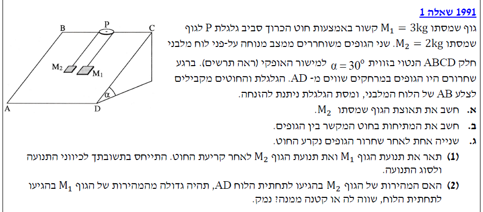
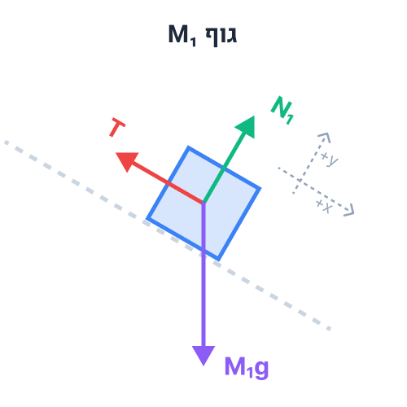
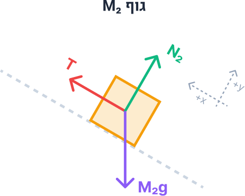

פתרון בגרות בפיזיקה
מכניקה 1991 - שאלה 1
עודכן:--.--.-- --:--:--

תמונת השאלה המקורית
לא נמצאה תמונה בשם question-image.png באותה תיקייה.
סעיף א'
מה נתון
- מסת הגוף הראשון: \(M_1 = 3\text{ kg}\) (היחידות כבר בשיטת MKS התקנית).
- מסת הגוף השני: \(M_2 = 2\text{ kg}\).
- זווית המישור המשופע: \(\alpha = 30^\circ\). לכן נדע כי \(\sin(30^\circ) = 0.5\).
- תאוצת הכובד: \(g = 10\text{ m/s}^2\) (בהתאם להוראות הבגרות, מוגדר כחיובי כלפי מרכז כדור הארץ).
- המישור "חלק" - כלומר אין כוח חיכוך פועל על הגופים (\(f = 0\)).
- גלגלת "ניתנת להזנחה" - אין מסה לגלגלת, ולכן המתיחות בחוט זהה בשני צידיה.
מה מחפשים
אנו מתבקשים לחשב את תאוצת הגוף \(M_2\). נסמן גודל זה באות \(a\). כיוון שהגופים קשורים בחוט מתוח, גודל התאוצה של שני הגופים זהה.
תרשים כוחות חופשי (FBD) וקביעת צירים
נשרטט את הכוחות הפועלים על כל גוף בנפרד. כדי להקל על הפתרון, נגדיר מערכת צירים לכל גוף בנפרד, כך שציר ה-x חיובי בכיוון התנועה המשוער של הגוף. רכיב כוח הכובד המושך למטה במורד המדרון הוא \(Mg\sin\alpha\). עבור \(M_1\) הכוח הוא \(15\text{ N}\) ועבור \(M_2\) הוא \(10\text{ N}\). לכן, \(M_1\) ימשוך את המערכת מטה, וינוע במורד המדרון, בעוד \(M_2\) ינוע במעלה המדרון.


נוסחאות בשימוש
\(\Sigma\vec{F} = m\vec{a}\) החוק השני של ניוטון
\(F = mg\) כוח הכבידה
הצבה ופתרון
נרשום את משוואות החוק השני של ניוטון עבור ציר ה-x של כל גוף בנפרד (על פי כיווני הצירים שהגדרנו, תאוצת שני הגופים היא חיובית ומוגדרת כ- \(a\)):
נציב את הנתונים המספריים שהמרנו לתוך שתי המשוואות:
\[ 3 \cdot 10 \cdot \sin(30^\circ) - T = 3a \implies 15 - T = 3a \]
\[ T - 2 \cdot 10 \cdot \sin(30^\circ) = 2a \implies T - 10 = 2a \]
נחבר את שתי המשוואות אלגברית כדי לבטל את המתיחות \(T\), המהווה כוח פנימי במערכת:
\[ (15 - T) + (T - 10) = 3a + 2a \]
\[ 5 = 5a \]
\[ a = \frac{5}{5} = 1\text{ m/s}^2 \]
תאוצת הגוף \(M_2\) היא \(1\text{ m/s}^2\) (במעלה המדרון)
💡
הערת מורה:
הגדרת צירים חכמה מונעת טעויות סימן! קבענו עבור כל גוף את הכיוון "החיובי" להיות כיוון התנועה הצפוי שלו. כך, התאוצה \(a\) היא גודל חיובי זהה בשתי המשוואות, ולא היינו צריכים לזכור להציב פלוס באחת ומינוס בשנייה. כמו כן, שימו לב שהצגנו פיתוח מלא של חוקי ניוטון עבור כל גוף בנפרד לפני ביטול המתיחות התוך-מערכתית!
סעיף ב'
מה נתון
- תאוצת המערכת כפי שחישבנו בסעיף הקודם: \(a = 1\text{ m/s}^2\).
- משוואות הכוחות מהסעיף הקודם זמינות לנו לשימוש.
מה מחפשים
את המתיחות בחוט המקשר, אותה סימנו באות \(T\).
נוסחאות בשימוש
\(\Sigma\vec{F} = m\vec{a}\) נשתמש באחת ממשוואות התנועה שכבר בנינו.
הצבה ופתרון
ניקח את משוואת התנועה של הגוף השני \(M_2\) שמצאנו בסעיף א', ונציב לתוכה את התאוצה \(a\) שמצאנו:
\[ T - 10 = 2a \]
\[ T - 10 = 2 \cdot 1 \]
\[ T = 10 + 2 \]
\[ T = 12\text{ N} \]
המתיחות בחוט היא \(12\text{ N}\)
✅
הערת מורה - בדיקה עצמית:
הרגל מצוין בבגרות הוא לבדוק את התשובה באמצעות המשוואה השנייה שלא השתמשנו בה! נציב במשוואה של \(M_1\):
\(15 - T = 3a \implies 15 - 12 = 3 \cdot 1 \implies 3 = 3\). קיבלנו פסוק אמת, ולכן הפתרון שלנו נכון בוודאות.
סעיף ג' (1)
מה נתון
- זמן תנועה עד קריעת החוט: \(t = 1\text{ s}\).
- הגופים החלו את תנועתם ממנוחה, לכן מהירותם ההתחלתית לשלב הראשון היא \(v_0 = 0\text{ m/s}\).
- לאחר קריעת החוט, המתיחות מתאפסת לחלוטין: \(T = 0\text{ N}\).
מה מחפשים
לתאר מילולית ופיזיקלית את תנועת הגופים מיד לאחר הקריעה, תוך התייחסות לכיוון התנועה ולסוג התנועה (האם גודל המהירות קטן, גדל או קבוע).
נוסחאות בשימוש
\(v = v_0 + at\) קינמטיקה - תנועה שוות תאוצה
\(\Sigma\vec{F} = m\vec{a}\) דינמיקה לחישוב התאוצה החדשה
הצבה ופתרון
שלב 1: מציאת המהירות ברגע קריעת החוט
נחשב את מהירות המערכת בדיוק ברגע \(t = 1\text{ s}\) טרם הקריעה. לגופים תאוצה \(a = 1\text{ m/s}^2\):
\[ v_1 = v_0 + at = 0 + 1 \cdot 1 = 1\text{ m/s} \]
כלומר, ברגע הקריעה גוף \(M_1\) נע במורד המדרון במהירות \(+1\text{ m/s}\) (בכיוון צירו), וגוף \(M_2\) נע במעלה המדרון במהירות \(+1\text{ m/s}\) (בכיוון צירו).
שלב 2: ניתוח כוחות לאחר קריעת החוט (\(T=0\))
כדי לא לבלבל, נשמור על מערכות הצירים המקוריות שהגדרנו בסעיף א'. כעת אין מתיחות, ולכן הכוח היחיד הפועל במקביל למדרון הוא רכיב כוח הכובד (\(Mg\sin\alpha\)), המכוון תמיד במורד המדרון.
שימו לב: לגוף \(M_2\) יצאה תאוצה שלילית, משום שכוח הכובד מושך אותו נגד הכיוון החיובי שהגדרנו לו.
שלב 3: תיאור התנועה המשולב (מהירות + תאוצה)
- גוף \(M_1\): מהירותו חיובית (\(v>0\)) ותאוצתו חיובית (\(a>0\)). שניהם באותו כיוון (במורד המדרון), לכן הוא יבצע תנועה שוות תאוצה בה גודל מהירותו הולך וגדל.
- גוף \(M_2\): מהירותו חיובית (\(v>0\), במעלה המדרון), אך תאוצתו שלילית (\(a<0\), במורד המדרון). מכיוון שהסימנים מנוגדים, הוא יבצע תנועה שוות תאוצה בה גודל מהירותו קטן עד שייעצר רגעית (\(v=0\)). מיד לאחר מכן הוא יתחיל לרדת חזרה. בשלב זה מהירותו תהיה שלילית (\(v<0\)) והתאוצה תישאר שלילית (\(a<0\)). כיוון שלשניהם אותו סימן, גודל מהירותו ילך ויגדל במורד המדרון.
M₁: ינוע במורד המדרון, בתנועה שוות-תאוצה, כשגודל מהירותו גדל.
M₂: ימשיך תחילה לנוע במעלה המדרון כשגודל מהירותו קטן, ייעצר רגעית, ולאחר מכן ינוע במורד המדרון כשגודל מהירותו גדל.
⚠️
טיפ מורה - עקביות בצירים:
הסוד להצלחה בקינמטיקה הוא לא להחליף צירים באמצע השאלה! שמירה על הציר המקורי הוכיחה לנו מתמטית את מה שההיגיון אומר: כשגוף נע בכיוון הפלוס אך נמשך לכיוון המינוס, המהירות שלו תקטן. אין צורך במושג "תאוטה", רק להשוות סימנים של \(v\) ו-\(a\).
סעיף ג' (2)
מה נתון
- ברגע יציאת הגופים לדרך (t=0), הם היו באותו מרחק מתחתית הלוח (AD). נסמן מרחק זה כ-\(L_0\).
- במשך שנייה אחת, המערכת נעה בתאוצה של \(a = 1\text{ m/s}^2\).
מה מחפשים
לקבוע האם מהירותו של גוף \(M_2\) בהגיעו לתחתית הלוח גדולה, קטנה או שווה למהירותו של גוף \(M_1\) בהגיעו לתחתית, ולנמק.
נוסחאות בשימוש
\(x = x_0 + v_0t + \frac{1}{2}at^2\) קינמטיקה - מציאת העתק (מרחק)
\(v^2 = v_0^2 + 2a(x - x_0)\) קינמטיקה - קשר מהירות-העתק ללא זמן
הצבה ופתרון
נחשב את המרחק שעברו הגופים במהלך השנייה הראשונה (עד לקריעת החוט):
\[ \Delta x = \frac{1}{2}at^2 = \frac{1}{2} \cdot 1 \cdot 1^2 = 0.5\text{ m} \]
ברגע קריעת החוט, הגופים נמצאים במיקומים שונים ביחס לתחתית המדרון:
- גוף \(M_1\) התקרב לתחתית ב-0.5 מטרים. מרחקו החדש מהתחתית הוא: \(L_0 - 0.5\text{ m}\).
- גוף \(M_2\) התרחק מהתחתית ב-0.5 מטרים. מרחקו החדש מהתחתית הוא: \(L_0 + 0.5\text{ m}\).
נשתמש בנוסחה \(v_f^2 = v_0^2 + 2a\Delta x\) כדי לבטא את מהירות הפגיעה בתחתית לכל גוף. נקפיד על מערכות הצירים המקוריות שלנו:
שימו לב ליופי של האלגברה עבור גוף \(M_2\): התאוצה שלו שלילית (נגד הציר), וההעתק הכולל שלו עד התחתית הוא גם שלילי (כי הוא מתחיל בנקודה גבוהה ומסיים בתחתית, כלומר הוא יורד נגד הציר שמופנה כלפי מעלה). מינוס כפול מינוס נותן פלוס! לכן ניתן לראות מיד מהמשוואות ש:
מכיוון שהביטוי של \(M_2\) גדול יותר (ההעתק בערכו המוחלט גדול יותר), בהכרח מתקיים: \(v_{f2}^2 > v_{f1}^2\).
מהירותו של הגוף \(M_2\) בהגיעו לתחתית הלוח תהיה גדולה ממהירותו של גוף \(M_1\).
🧠
הסבר אינטואיטיבי על סימטריה:
דרך יפהפייה לחשוב על זה ללא משוואות היא דרך עקרון הסימטריה הקינמטית. ברגע הקריעה, גוף \(M_2\) נע למעלה במהירות \(1\text{ m/s}\). הוא יעלה עד שייעצר, ויירד חזרה בדיוק לאותה נקודה בה החוט נקרע. כשהוא יחלוף על פני נקודת הקריעה הזו שוב, מהירותו תהיה בדיוק \(1\text{ m/s}\) כלפי מטה! כלומר, מנקודה זו והלאה הוא מתנהג בדיוק כמו גוף \(M_1\) ברגע הקריעה. אך מכיוון שנקודה זו גבוהה יותר מהנקודה בה נמצא \(M_1\), יש ל-\(M_2\) יותר זמן "ליפול" ולהאיץ, ולכן הוא יגיע לקרקעית עם מהירות גדולה יותר.